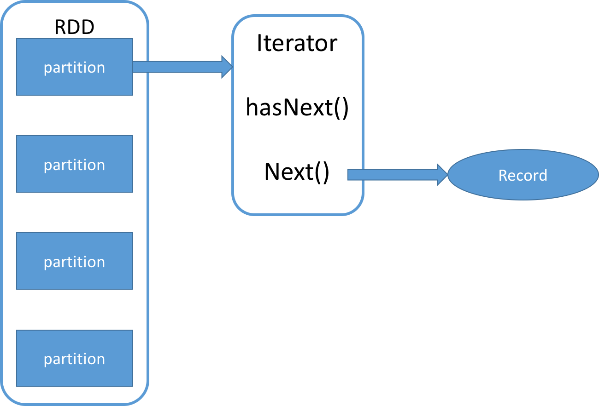

class: center, middle, inverse ## [NetEase Spark Courses](https://netease-bigdata.github.io/ne-spark-courseware/) <br> <br> <br> <br> ## Spark RDD理解与性能调优 <br> <br> <br> <br> <img style="zoom: 1.0" src="../../imgs/mammut.png" align="bottom" /> ??? 备注：标题 <br> 帮助信息：在网页端按H键可进入帮助页面 --- class: center,inverse name: rdd # Agenda ## - ** About Me **<br> ## - ** RDD定义及特点 **<br> ** RDD Operations **<br> ** RDD 依赖 **<br> ** RDD Persist **<br> ** 相关链接 **<br> --- class: name: .left-column[ ## About Me ] .right-column[ ## 王斐 2018年校招加入网易，硕士期间研究Spark平台内存优化，目前在杭州研究院-数据科学中心负责Spark平台开发相关工作。 ] --- class: name: .left-column[ ### What is Spark? ] .right-column[ Apache Spark™ is a unified analytics engine for large-scale data processing. <figure class="half"> </figure> ] --- class: name: .left-column[ ### RDD定义及特点 #### RDD定义 ] .right-column[ RDD(Resilient Distributed Datasets),弹性分布式数据集，是对分布式内存的抽象。 <figure class="half">  </figure> ] ??? 首先讲一下rdd的定义，rdd的英文全称是resilient distributed dataset，弹性分布式数据集，是对分布式内存的抽象。可以看下左边这张图，可以看到这个虚线下面是hdfs，上面是rdd，看起来rdd和hdfs有点像，都是跨节点，然后hdfs是分块，rdd是分区。 我们看右边这张图，rdd的一个分区，拆开了里面是一个迭代器，我们知道迭代器并不是一个集合，而只是提供了一个访问集合的方法。它类似于Java里面的stream。是lazy的，只有在触发取数据才会返回数据。 所以rdd也是lazy的，并不是一声明就会进行计算，而是需要一个触发，才会进行计算。 迭代器里面是hasnext和next方法，当调用next，他返回被引用集合中的一条数据，称之为record。 --- class: name: .left-column[ ### RDD定义及特点 #### RDD定义 #### RDD特点 ] .right-column[ #### 弹性 - 不可变 - 血缘 #### 分布式 - 跨节点 - 分区 #### 延迟计算 <figure class="half"> </figure> ] ??? 前面讲了rdd的定义和形态，这里讲下他的特点。 rdd叫做弹性分布式数据集，首先讲一下弹性相关的特点。 不变性。不变性是函数式编程的基石。给人以安全感，就是说这个rdd不论在哪，只要输入一样，他的输出永远都一样，这就方便进行容错。也方便进行弹性调度，spark在观察到一个任务在某个节点运行特别缓慢，会为这个任务在其他资源丰富的节点创建备份任务，谁先运行完就使用谁的结果，因为他的结果是确定的。 然后是血缘，就是说对于一个rdd，我知道他的来龙去脉，就算中间过程执行出错，也能从源头重新来过，这就提供了很好的容错。 分布式的特点就比较明朗，就是跨节点和分区，跨节点提供了多个节点一起执行的能力，而分区，将要处理的数据的粒度进行划分的更细，方便进行并行操作。 延迟计算前面已经提到过，分区里面是迭代器，这是一个lazy访问，比如下面这一大串的rdd，组成了一个链，在触发图上这个runjob之前，前面的abcdef都不会发生计算。 这样做有优点也有缺点，优点就是说，这样可以更明确的进行计算，比如我一个应用我要做五个job，这五件事情是相互独立的。如果没有延迟计算，那五件job，第一件开始了，我开始算，第二件开始了，我也算，同时五个job一起算，可能内存中就存储了大量的中间数据，结果这些资源可能死锁，五个job一件都完成不了。 而延迟计算就比较明确，一件job触发runjob我才计算，完成一个job再去完成另外的job，这样效率更高。 然后就是延迟计算，可以得到整个job的拓扑图，可以对这个拓扑图进行优化。 延迟计算的缺点，就是响应会慢点，这就导致spark在流处理这块，响应速度比Flink要慢，不适合实时流计算场景。但是目前spark也在流计算方面追赶，相信未来spark在流处理方面会有更好地表现。 --- class: name: .left-column[ ## RDD Operations <!-- ### transformation & action --> ### transformation ] .right-column[ transformation：从数据源生成RDD或者对已存在的RDD进行转换生成新RDD。 - transforamtion算子提供了一个并行的语义。 - API隐藏了数据划分、并行、通信、容错等复杂的框架代码。 - 算子里面的函数为用户自定义的函数(UDF)，该函数为一个串行函数，根据算子的语义对RDD中的数据按照语义的<font color=#A52A2A size=4 >**操作粒度**</font>进行操作。 1. rdd1.mapValues(s=> s*2) 2. def func1( i:Int):Int={ i*2} rdd1.mapValues (func1) |transformation | Meaning | | ----- | :-----: | | textFile/objectFile| 从数据源生成RDD| | map(func) | 对每条record进行函数计算 | | mapValues(func)| 对(key,value)类型的record的value计算 | | filter(func) | 只保留符合条件的records | | flatMap(func) | 将records的按照规则进行展开 | | mapPartitions(func) | 以RDD的每个分区进行函数计算 | | mapPartitionsWithIndex(func) | 对分区操作，提供partitionId参数 | | groupByKey([numPartitions]) | 对(k,v)类型records按照key进行聚合 | | reduceByKey(func, [numPartitions]) | 对(k,v)类型records按照key进行合并 | | aggregateByKey(zeroValue)(seqOp, combOp,[numPartitions]) | 先按照分区聚合，然后按照key值合并 | | coalesce(numPartitions) | 重新分区 | | repartition(numPartitions) | 重新分区 | <!-- | repartitionAndSortWithinPartitions(partitioner) | 重新分区，且在分区内进行排序 | --> <!-- | sample(withReplacement, fraction, seed) | 返回一个子集 | | intersection(otherDataset) | 返回两个RDD的交集 | | distinct([numPartitions])) | 返回一个不包含重复record的数据集 | | sortByKey([ascending], [numPartitions]) | 对(k,v)类型records按照key进行排序 | | union(otherDataset) | 直接将两个RDD的分区进行联合 | | join(otherDataset, [numPartitions]) | (k,v) join(k,w)=>(k,(v,w))| | cogroup(otherDataset, [numPartitions]) | （k,v) coGroup(k,w)=>(k,seq(v),seq(w))| | cartesian(otherDataset) | 笛卡尔积计算 | --> ] ??? spark的提供了丰富的算子，相对于MapReduce编程模型，需要自己指定mapper和reducer方便了很多。 算子分为两种，trans和action。首先讲一下trans，字面意思是转换。是生成新的RDD，要么是从数据中生成，或者是对现有RDD进行操作生成新的。 下面列的这些都是常见的trans算子，比如map,mapvalue,mappartitions这些。trans算子提供了并行的语义，把底层的并行进行了封装，什么数据划分都不用我们管，往往需要用户提供一个函数参数，这个函数是一个串行函数，然后加上算子的并行的语义，就可以并行的对数据进行计算。至于对哪些数据进行计算，是对一条数据，还是一个分区的数据，是需要看算子的操作粒度的。 <!-- --- class: name: .left-column[ ## RDD Operations ### transformation ] .right-column[ - transforamtion算子提供了一个并行的语义。 - API隐藏了数据划分、并行、通信、容错等复杂的框架代码。 - 算子里面如果有函数参数，该函数为用户自定义的函数(UDF)，该函数为一个串行函数，根据算子的语义对RDD中的数据按照语义的<font color=#A52A2A size=4 >**操作粒度**</font>进行操作。 1. rdd1.mapValues(s=> s*2) 2. def func1( i:Int):Int={ i*2} rdd1.mapValues (func1) ] --> --- class: name: .left-column[ ## RDD Operations <!-- ### transformation & action --> ### transformation ] .right-column[ #### 操作粒度 - 对每条record操作 map, flatMap, filter - 对(key, value)类型record中的value操作 mapValues - 对整个分区数据操作 mapPartitions,mapPartitionsWithIndex - 对分区进行混洗(shuffle) reduceBykey,aggregataByKey,gropuByKey,repartition repartition,repartitionAndSortWithinPartitions <!-- - 对多个RDD进行操作 join, union, coGroup - 重新分区 repartition, coalesce --> ] --- class: name: .left-column[ ## RDD Operations ### transformation ### action ] .right-column[ Action:得到一个结果，或者将RDD存入磁盘。 | Action | Meaning | | :----------: | :--------------------------------------: | | countByKey() | 返回Map(k,count(k))，即每个key的个数 | | reduce(func) | 将所有数据按照func进行聚合，返回一个值 | | take(n) | 返回数据集的前N个数据的数组 | | collect() | 将所有数据提取到driver上，转换成一个数组 | | count() | 获得数据集的数据条数，一个值 | | first() | 返回数据集的第一个数据，一个值| |foreach(func) | 对每个数据进行操作 | | takeOrdered(n, [ordering]) | 返回排序后数据集的前n个数据，一个数组 | | takeSample(withReplacement, num, [seed]) | 根据seed进行抽样，获得num个数据，一个数组 | | saveAsTextFile(path) | 保存为text文件 | | saveAsObjectFile(path) | 保存为object文件 | ] --- class: name: .left-column[ ## RDD Operations ### transformation ### action ### 理解算子 ] .right-column[ - map, mapPartitions 例子： 一个RDD有10个分区，每个分区有1000条数据。对每条数据进行function操作。 map算子，调用function 10000次 mapPartitions算子，调用function10次，但是每次处理一个分区的数据，分区较大可能发生OOM ``` // rdd:RDD[(Int,Int)] def function1(tuple:(Int,Int)):(Int,Int)={ (tuple._1+1,tuple._2+1) } def function2(iterator: Iterator[(Int,Int)]): Iterator[(Int,Int)] ={ var list=List[(Int,Int)]() for(i<-iterator){ list.::(i._1+1,i._2+1) } list.iterator } rdd.map(function1) rdd.mapPartitions(function2) ``` - collect collect算子会拉取rdd中所有数据到driver节点，转换成一个数组，如果数据量过大，会造成driver的OOM <!-- - repartitionandsortwithinpartitions 如果需要repartition之后对分区排序，那么使用这个repartitionandsortwithinpar titions性能会更好，因为可以将排序放在shuffle过程 --> <!-- - 尽量使用reduceByKey代替groupByKey reduceByKey 算子会在map端对数据进行聚合(map-side combine)。 groupByKey不会在map端进行聚合，会造成在shuffle阶段进行大规模数据传输和在shuffle read端的巨大内存压力。 --> ] --- class: name: .left-column[ ## RDD Operations ### transformation ### action ### 理解算子 ### wordCount Demo ] .right-column[ ``` package com.netease.bigdata.spark import org.apache.spark.{SparkConf, SparkContext} object WordCount { def main(args: Array[String]): Unit = { require(args.length == 1, "Usage: WordCount <input file>") val conf = new SparkConf().setAppName("Word Count").setMaster("local[*]") val sc = new SparkContext(conf) val textFile = sc.textFile(args(0), 2) val words = textFile.flatMap(_.split("\\s+")) val ones = words.map((_, 1)) val counts = ones.reduceByKey(_ + _) val res = counts.collect() for ((word, count) <- res) { println(word + ": " + count) } sc.stop() } } ``` <figure class="half"> <img src="../../imgs/spark_core/wc-trans.png" width="100%" height="28%"> </figure> ] --- class: name: .left-column[ ## RDD 依赖 ### 宽依赖 & 窄依赖 ] .right-column[ <figure class="half"> <img src="../../imgs/spark_core/dependencies.png" width="90%" height="50%"> </figure> ] --- class: name: .left-column[ ## RDD 依赖 ### 宽依赖 & 窄依赖 ### Shuffle ] .right-column[ #### Shuffle是一个怎样的过程: SortShuffle - shuffle write端每个task计算结果按照key进行hash得到partitionID,然后把((pID,key),value)插入到一个数组(内存)中,如果内存不足则spill到磁盘，对数组使用TimSort排序（内存不足则spill到磁盘) - 将排序结果存为partitiondFile到磁盘(序列化,磁盘I/O). - shuffle read端从所有partitionFile中拉取对应分区数据，进行网络传输，反序列化为对象，进行合并排序，内存不足则溢出磁盘. <figure class="half"> <img src="../../imgs/spark_core/shuffle.png" width="72%" height="40%"> </figure> ] --- class: name: .left-column[ ## RDD 依赖 ### 宽依赖 & 窄依赖 ### Shuffle ### Shuffle & Stage & Task ] .right-column[ #### WordCount Lineage <figure class="half"> </figure> - Action触发Job的提交 - 按照Shuffle划分stages - 每个stage中是独立的n个task，n等于当前stage中rdd分区的数目，每个task分别处理一个分区的数据 - 在一个executor中，并行的task数目和executor的核数有关。 ] --- class: name: .left-column[ ## RDD 依赖 ### 宽依赖 & 窄依赖 ### Shuffle ### Shuffle & Stage & Task ### Task & Loop ] .right-column[ ##### Loop - 从数据源中读取数据对象 - 对每个数据对象运用一系列计算函数 - 将计算结果写入一个新的数据集合中 <figure class="half"> </figure> ] --- class: name: .left-column[ ## RDD 依赖 ### 宽依赖 & 窄依赖 ### Shuffle ### Shuffle & Stage & Task ### Task & Loop ### Object Lifetime ] .right-column[ 三种数据容器：存放数据对象的引用，数据对象的生命周期依赖于其容器的生命周期。 <figure class="half"> </figure> ] --- class: name: .left-column[ ## RDD 依赖 ### 宽依赖 & 窄依赖 ### Shuffle ### Shuffle & Stage & Task ### Task & Loop ### Object Lifetime ### Shuffle Tuning ] .right-column[ #### 避免不必要shuffle - repartition, coalesce, repartitionandsortwithinpartitions 对rdd重新分区 repartition(numPartitions: Int)=coalesce(numPartitions, shuffle = true) <!-- 如果需要repartition之后对分区排序，那么使用这个repartitionandsortwithinpar titions性能会更好，因为可以将分区排序放在shuffle过程 --> <figure class="half"> </figure> ] --- class: name: .left-column[ ## RDD 依赖 ### 宽依赖 & 窄依赖 ### Shuffle ### Shuffle & Stage & Task ### Task & Loop ### Object Lifetime ### Shuffle Tuning ] .right-column[ - broadcast实现map join代替 reduce join，<font color=#A52A2A size=4 >**避免shuffle**</font> 在对RDD使用join类操作(with inputs not co-partitioned)，而且join操作中的一个RDD或表的数据量比较小 使用broadcast广播小表，然后通过对小表进行遍历完成map join，避免了shuffle的发生 ``` val rdd2Data = rdd2.collect() val rdd2Bc = sc.broadcast(rdd2Data) def function(tuple: (String,Int)): (String,(Int,String)) ={ for(value <- rdd2Bc.value){ if(value._1.equals(tuple._1)) return (tuple._1,(tuple._2,value._2.toString)) } (tuple._1,(tuple._2,null)) } val rdd3 = rdd1.map(function(_)) ``` ] --- class: name: .left-column[ ## RDD 依赖 ### 宽依赖 & 窄依赖 ### Shuffle ### Shuffle & Stage & Task ### Task & Loop ### Object Lifetime ### Shuffle Tuning ] .right-column[ - Why broadcast? Spark存在作用域，变量声明在driver上，当task需要操作这些driver上声明的变量时会从driver拷贝副本传输到task。 broadcast是保证这个由driver声明的变量值只会发送到每个worker上面一份。 如果不使用broadcast,driver需要给每个task都发送一份副本，如果广播变量较大，会造成大量网络传输。 ``` val rdd2Data = rdd2.collect() //val rdd2Bc = sc.broadcast(rdd2Data) def function(tuple: (String,Int)): (String,(Int,String)) ={ for(value <- rdd2Data){ if(value._1.equals(tuple._1)) return (tuple._1,(tuple._2,value._2.toString)) } (tuple._1,(tuple._2,null)) } val rdd3 = rdd1.map(function(_)) ``` ] --- class: name: .left-column[ ## RDD 依赖 ### 宽依赖 & 窄依赖 ### Shuffle ### Shuffle & Stage & Task ### Task & Loop ### Object Lifetime ### Shuffle Tuning ] .right-column[ #### map-side Combine 在shuffle write端进行合并数据，可以减少shuffle阶段序列化反序列化开销以及网络传输开销，也会减小在shuffle read端的压力，提升程序性能。 - 尽量使用aggregateByKey和reduceByKey代替groupByKey | | | | :---:| :---: | | groupByKey([numPartitions]) | 没有map-side combine，对(k,v)类型records按照key进行聚合 | | reduceByKey(func, [numPartitions]) | map-side combine, 对(k,v)类型records按照key进行合并 | | aggregateByKey(zeroValue)(seqOp, combOp, [numPartitions]) | 先对数据按照分区使用seqOp聚合，然后再按照key值使用combOq合并 | 一个RDD，变量名为rdd:RDD[(Int,Int)]，对其进行按key，求value之和操作。 ``` //reduceByKey with map-side combine val red=rdd.reduceByKey(_+_) //aggregateByKey with map-side combine val agg=rdd.aggregateByKey(0)(((i1,i2)=>i1+i2),((i1,i2)=>(i1+i2))) //groupByKey without map-side combine val gbk=rdd.groupByKey().mapValues(iter=> iter.sum) ``` ] --- class: name: .left-column[ ## RDD 依赖 ### 宽依赖 & 窄依赖 ### Shuffle ### Shuffle & Stage & Task ### Task & Loop ### Object Lifetime ### Shuffle Tuning ] .right-column[ #### 数据倾斜 数据倾斜是由于存在一些<font color=#A52A2A size=4 >**热点数据**</font>，比如某个key存在大量对应的value，或者某个分区存在大量数据(即存在大量hash之后得到同样hash值的key)。 ##### 数据倾斜现象 - 绝大多数task很快结束，存在几个straggler. - 原本能够正常执行的Spark作业，执行某个数据集突然报出OOM（内存溢出）异常。 ##### 数据倾斜原理及影响 - shuffle Read需要将各个节点上相同的key拉取到某个节点上的一个task来进行处理，比如按照key进行聚合或join等操作。此时如果某个key对应的数据量特别大的话，就会发生数据倾斜。 - 某个task对应数据量大，可能会导致OOM，以及多次重试。 - 每个stage的运行时间由最后一个完成的task决定。 ] --- class: name: .left-column[ ## RDD 依赖 ### 宽依赖 & 窄依赖 ### Shuffle ### Shuffle & Stage & Task ### Task & Loop ### Object Lifetime ### Shuffle Tuning ] .right-column[ #### 解决数据倾斜 - 提高shuffle操作的并行度-加大shuffle操作时partition数量 reduceByKey(func, [numPartitions]) aggregateByKey(zeroValue)(seqOp, combOp, [numPartitions]) 配置spark.default.parallelism 优点： 实现简单，可以有效缓解数据倾斜。 缺点： 针对热点数据比如一个key对应巨量数据的情况无法解决。 - 分阶段聚合 前面提到的map-side combine 优点： 对于聚合类的shuffle操作导致的数据倾斜，非常有效。 缺点： 仅仅适用于聚合类的shuffle操作，适用范围相对较窄。无法处理join类shuffle数据倾斜。 ] --- class: name: .left-column[ ## RDD 依赖 ### 宽依赖 & 窄依赖 ### Shuffle ### Shuffle & Stage & Task ### Task & Loop ### Object Lifetime ### Shuffle Tuning ] .right-column[ - 给key加随机前缀，缓解热点数据 通过spark提供的takeSample算子可以对RDD进行采样。通过观察看是否存在数据倾斜/热点数据. ``` takeSample(withReplacement, num, [seed]) ``` 进行join操作，比如存在热点key “hello",对应大量的value,此时我们给每个key加上(0-10)之间的随机前缀，这些数据就会随机变成(1_hello,v1),(2_hello,v2) ... (10_hello,v10)，这样就缓解了热点的key。 - 混合使用多种调优策略 ] <!-- --- class: name: .left-column[ ## RDD 依赖 ### 宽依赖 & 窄依赖 ### Shuffle ### Stage & Task ### Shuffle Tuning ] .right-column[ - Why broadcast? Spark存在作用域，变量声明在driver上，当executor需要使用driver上的变量，会有driver拷贝一个副本发送到executor。 broadcast是保证这个由driver声明的变量值只会发送到executor上面一份。 如果不使用broadcast,每条数据都要调用map里面的function,每调用一次就会由driver拷贝一份副本发送到executor，造成大量网络传输。 ] --> <!-- --- class: name: .left-column[ ## RDD与Task ### 分区与Task ] .right-column[ - 每个stage里面，有若干个 相互独立的Task。 - Task数目等于被操作RDD的分区数。 - 每个Task分别对RDD的一个分区进行一系列操作。 - 在一个executor中，并行的task数目和executor的核数有关。 ] --> <!-- --- class: name: .left-column[ ## RDD与Task ### 分区与Task ] .right-column[ - 每个stage里面，有若干个 相互独立的Task。 - Task数目等于被操作RDD的分区数。 - 每个Task分别对RDD的一个分区进行一系列操作。 - 在一个executor中，并行的task数目和executor的核数有关。 ] --> <!-- --- class: name: .left-column[ ## RDD与Task ### 分区与Task ### 内存模型 ] .right-column[ <center class="half"> <img src="../../imgs/rdd_basics/memory.png" width="30%" height="50%"> </center> - 当RDD分区里数据量很大时，每个task占用的执行内存比较大，容易造成内存紧张。 - 当executor内存压力大，可以增大分区数量(减少分区数据量)或者减少executor cpu 核数（减小并行处理task的数量)。 ] --> --- class: name: .left-column[ ## RDD 依赖 ### 宽依赖 & 窄依赖 ### Shuffle ### Shuffle & Stage & Task ### Task & Loop ### Object Lifetime ### Shuffle Tuning ] .right-column[ #### 参数调优 - spark.shuffle.file.buffer default: 32k shuffle write端写磁盘文件时缓冲区大小，适量增大可以减少磁盘I/O次数，进而提升性能。 - spark.reducer.maxSizeInFlight default: 48M shuffle read端拉取对应分区数据缓冲区大小，适量增大可以减少网络传输次数，进而提升性能。 - spark.shuffle.io.maxRetries default: 3 shuffle read端拉取对应数据时，因为网络异常拉取失败重新尝试的最大次数。针对超大数据量的应用，可以增大重试次数，大幅度提升稳定性。 ] --- class: name: .left-column[ ## RDD Persist ] .right-column[ - 机器学习，图计算等应用存在大量迭代计算。 - 适当的缓存中间数据可以避免重复计算。 persist(storageLevel) cache()=persist(StorageLevel.MEMORY_ONLY) - 缓存级别 | | | | :-----------------: | :----:| | MEMORY_ONLY | 只缓存在内存中| | MEMORY_AND_DISK | 缓存在内存和磁盘| | MEMORY_ONLY_SER | 序列化缓存在内存中| | MEMORY_AND_DISK_SER | 序列化缓存在内存和磁盘| | DISK_ONLY | 只缓存在磁盘| | MEMORY_ONLY_2 | 缓存在内存中两份(一份副本)| | MEMORY_AND_DISK_2 | 缓存在内核和磁盘两份(一份副本)| | OFF_HEAP | 缓存在堆外 | ] --- class: name: .left-column[ ## 相关链接 ] .right-column[ - RDD论文 https://www.usenix.org/system/files/conference/nsdi12/nsdi12-final138.pdf - RDD算子介绍 http://spark.apache.org/docs/latest/rdd-programming-guide.html - spark 配置 http://spark.apache.org/docs/latest/configuration.html - 性能调优 http://spark.apache.org/docs/latest/tuning.html ] --- class: middle, center, inverse name: greetings # Q & A --- class: center, middle, inverse # Thanks！ <img style="zoom: 1.0" src="../../imgs/mammut.png" align="bottom" /> <a rel="license" href="http://creativecommons.org/licenses/by-nc/4.0/"><img alt="Creative Commons License" style="border-width:0" src="https://i.creativecommons.org/l/by-nc/4.0/88x31.png" /></a><br />This work is licensed under a <a rel="license" href="http://creativecommons.org/licenses/by-nc/4.0/">Creative Commons Attribution-NonCommercial 4.0 International License</a>.